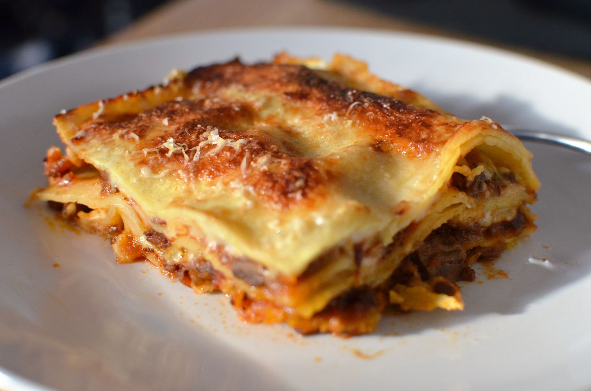

Lasagne Alla Bolognese

What is Lasagne Alla Bolognese?
Lasagne Alla Bolognese is a type of lasagna that is made with bolognese sauce, which is a meat based sauce that typically includes ground beef, tomatoes, onions, garlic, and other seasonings. The sauce is layered with lasagna noodles and cheese, and then baked in the oven until it is hot and bubbly.
What ingredients do you need?
- Lasagne noodles
- Ground Beef
- Canned Tomatoes
- Onion Garlic
- Celery
- Carrot
- Milk
- Beef Broth
- Butter
- Flour
- Salt
- Pepper
- Parmesan Cheese
What are the steps to making Lasagne Alla Bolognese?
- Preheat oven to 375 F
- Cook lasagna noodles to the package instructions and set aside.
- Cook ground beef in a large skillet, until browned and crumbled.
- Add canned tomatoes, onion garlic, celery, carrot beef broth, salt, and pepper. Simmer for 30 minutes.
- In a seperate saucepen, melt butter and whisk in flour to make roux.
- Add milk and continue whisking until sauce thickens
- Add salt and pepper to taste.
- To assemble the lasagna, spread a layer of bolognese sauce on the bottom of a baking dish, then add a layer of lasagna noodles.
- Add a layer of white sauce, then another layer of bolognese sauce, and repeat until all ingredients are used up.
- Top with Parmesan cheese.
- Bake in oven for about 25-30 minutes.
Complete! Enjoy!
Back to Main Menu!